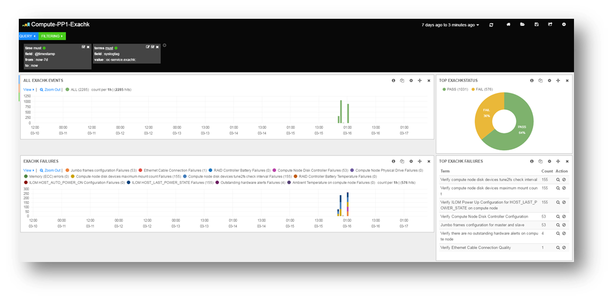

2.10 Integrating Health Check Results with Other Tools
Integrate health check results from Oracle ORAchk and Oracle EXAchk into Enterprise Manager and other third-party tools.
Topics:
- Integrating Health Check Results with Oracle Enterprise Manager
Integrate health check results from Oracle ORAchk and Oracle EXAchk into Oracle Enterprise Manager. - Integrating Health Check Results with Third-Party Tool
Integrate health check results from Oracle ORAchk and Oracle EXAchk into various third-party log monitoring and analytics tools, such as Elasticsearch and Kibana. - Integrating Health Check Results with Custom Application
Oracle ORAchk and Oracle EXAchk upload collection results from multiple instances into a single database for easier consumption of check results across your enterprise.
2.10.1 Integrating Health Check Results with Third-Party Tool
Integrate health check results from Oracle ORAchk and Oracle EXAchk into various third-party log monitoring and analytics tools, such as Elasticsearch and Kibana.
Figure 2-23 Third-Party Tool Integration
Description of "Figure 2-23 Third-Party Tool Integration"
Report_Output_Dir/upload/mymachine_orachk_results.json
Report_Output_Dir/upload/mymachine_orachk_exceptions.jsonReport_Output_Dir/upload/mymachine_exachk_results.json
Report_Output_Dir/upload/mymachine_exachk_exceptions.json-
Run the
–syslogoption to write JSON results to thesyslogdaemon.For example:./orachk –syslog./exachk –syslog -
Verify the
syslogconfiguration by running the following commands:Oracle ORAchk and Oracle EXAchk use the message levels:
CRIT,ERR,WARN, andINFO.$ logger -p user.crit crit_message $ logger -p user.err err_message $ logger -p user.warn warn_message $ logger -p user.info info_message -
Verify in your configured message location, for example,
/var/adm/messagesthat each test message is written.
2.10.2 Integrating Health Check Results with Custom Application
Oracle ORAchk and Oracle EXAchk upload collection results from multiple instances into a single database for easier consumption of check results across your enterprise.
Use Oracle Health Check Collections Manager or your own custom application to consume health check results.
-
Upload the collection results into the following tables at the end of a collection:
Table 2-4 Uploading Collection Results into a Database
Table What Get’s Uploaded rca13_docsFull zipped collection results.
auditcheck_resultHealth check results.
auditcheck_patch_resultPatch check results.
If you install Oracle Health Check Collections Manager, then these tables are created by the install script.
-
If the tables are not created, then use the following DDL statements:
-
DDL for the RCA13_DOCS table
CREATE TABLE RCA13_DOCS ( DOC_ID NUMBER DEFAULT to_number(sys_guid(),'XXXXXXXXXXXXXXXXXXXXXXXXXXXXXXXX') NOT NULL ENABLE, COLLECTION_ID VARCHAR2(40 BYTE), FILENAME VARCHAR2(1000 BYTE) NOT NULL ENABLE, FILE_MIMETYPE VARCHAR2(512 BYTE), FILE_CHARSET VARCHAR2(512 BYTE), FILE_BLOB BLOB NOT NULL ENABLE, FILE_COMMENTS VARCHAR2(4000 BYTE), TAGS VARCHAR2(4000 BYTE), ATTR1 VARCHAR2(200 BYTE), UPLOADED_BY VARCHAR2(200 BYTE) DEFAULT USER, UPLOADED_ON TIMESTAMP (6) DEFAULT systimestamp, SR_BUG_NUM VARCHAR2(20 BYTE), CONSTRAINT RCA13_DOCS_PK PRIMARY KEY (DOC_ID), CONSTRAINT RCA13_DOCS_UK1 UNIQUE (FILENAME) ); -
DDL for the auditcheck_result table
CREATE TABLE auditcheck_result ( COLLECTION_DATE TIMESTAMP NOT NULL ENABLE, CHECK_NAME VARCHAR2(256), PARAM_NAME VARCHAR2(256), STATUS VARCHAR2(256), STATUS_MESSAGE VARCHAR2(256), ACTUAL_VALUE VARCHAR2(256), RECOMMENDED_VALUE VARCHAR2(256), COMPARISON_OPERATOR VARCHAR2(256), HOSTNAME VARCHAR2(256), INSTANCE_NAME VARCHAR2(256), CHECK_TYPE VARCHAR2(256), DB_PLATFORM VARCHAR2(256), OS_DISTRO VARCHAR2(256), OS_KERNEL VARCHAR2(256), OS_VERSION NUMBER, DB_VERSION VARCHAR2(256), CLUSTER_NAME VARCHAR2(256), DB_NAME VARCHAR2(256), ERROR_TEXT VARCHAR2(256), CHECK_ID VARCHAR2(40), NEEDS_RUNNING VARCHAR2(100), MODULES VARCHAR2(4000), DATABASE_ROLE VARCHAR2(100), CLUSTERWARE_VERSION VARCHAR2(100), GLOBAL_NAME VARCHAR2(256), UPLOAD_COLLECTION_NAME VARCHAR2(256) NOT NULL ENABLE, AUDITCHECK_RESULT_ID VARCHAR2(256) DEFAULT sys_guid() NOT NULL ENABLE, COLLECTION_ID VARCHAR2(40), TARGET_TYPE VARCHAR2(128), TARGET_VALUE VARCHAR2(256), CONSTRAINT "AUDITCHECK_RESULT_PK" PRIMARY KEY ("AUDITCHECK_RESULT_ID") ); -
DDL for the auditcheck_patch_result table
CREATE TABLE auditcheck_patch_result ( COLLECTION_DATE TIMESTAMP(6) NOT NULL, HOSTNAME VARCHAR2(256), ORACLE_HOME_TYPE VARCHAR2(256), ORACLE_HOME_PATH VARCHAR2(256), ORACLE_HOME_VERSION VARCHAR2(256), PATCH_NUMBER NUMBER, CLUSTER_NAME VARCHAR2(256), DESCRIPTION VARCHAR2(256), PATCH_TYPE VARCHAR2(128), APPLIED NUMBER, UPLOAD_COLLECTION_NAME VARCHAR2(256), RECOMMENDED NUMBER );
-
Related Topics